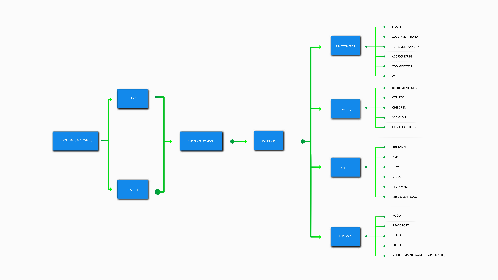
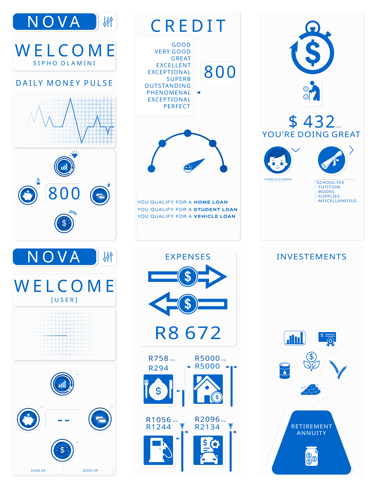
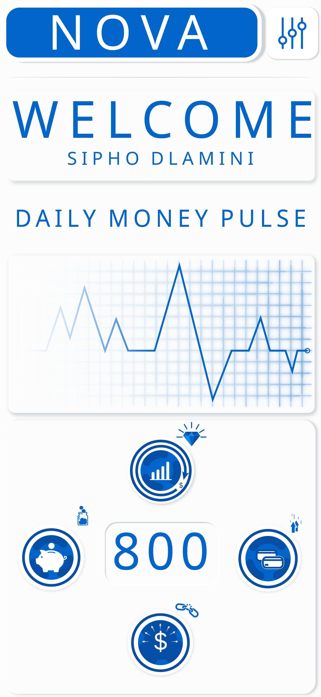
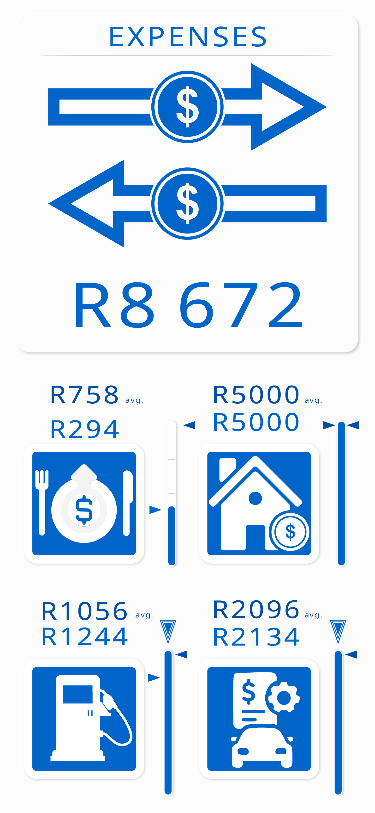
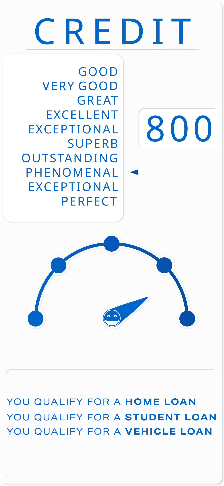
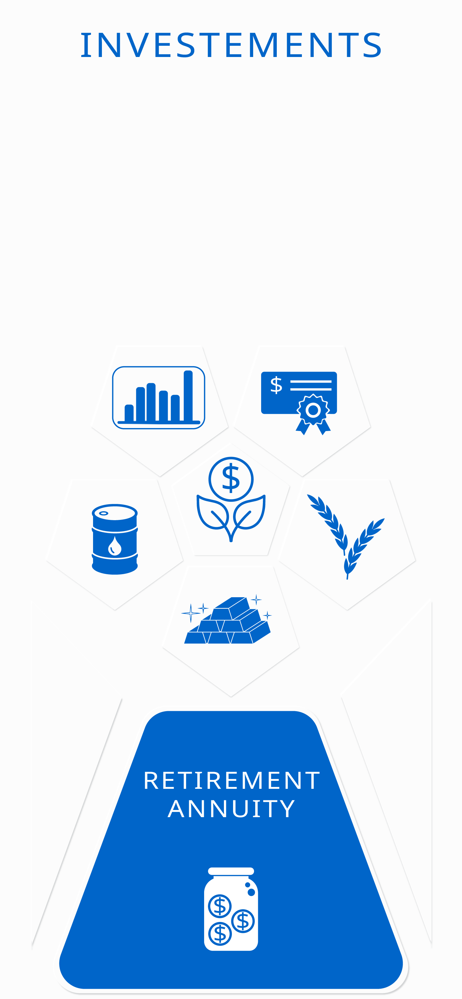

Project Title Showcase
UI/UX Case Study
Design Rationale
Context & Responsibilities: Between work, studying towards his Master's degree in software engineering, raising his young son, and paying off student debt, Sipho has almost no free time. He wants to build his credit score, save consistently, start investing, and eventually qualify for a home loan—all while building financial security for his son's future.
The Primary Pain Point: Sipho knows what he wants to achieve financially, but struggles to know what should take priority. His money is spread across different accounts and responsibilities, leaving him feeling overwhelmed by which decisions to make. Nova helps him prioritise by presenting his financial health in one place and recommending the most important action to take.
The Control Room & Financial Pulse
The home page was designed to act as the user's control room. Everything users need most is accessible from a single screen, including Savings, Investments, Credit, and Expenses. The goal was to let users understand where they stand and what they should focus on without navigating through multiple pages.
The focal point of the home screen is the Financial Pulse, inspired by a heart rate monitor. Rather than showing several separate scores, it gives users an indicator of their overall financial health based on their savings, expenses, credit, investments, and cash flow. If the Pulse begins to slow, the app directs users to the section that needs attention, keeping the home screen clean while making vital information easy to find.
01. Core Goal
- Unified Control Center: Centralize savings, credit, investments, and expenses into a single screen to eliminate multi-page navigation.
- Smart Prioritization: Guide users with clear, single-action recommendations and an overall "Financial Pulse" health indicator.
- Stress-Free Fintech UX: Reduce anxiety through calming navy visual tones, non-judgmental messaging, and encouraging positive feedback.
02. Visual Language
- Color Psychology: Built around trust-inducing Navy Blue (
#0065c9) and clean white space, completely avoiding stress-inducing warning colors like red, orange, or yellow. - Neomorphic Aesthetics: Modern, soft-extruded UI controls that create tactile depth while keeping the interface reassuringly familiar.
- Positive Framing: Tone of voice avoids negative connotations or mistake-highlighting, focusing purely on constructive next steps and encouraging progress.
03. Accessibility & Focus
- Single Focal Point: Highlights only one urgent task or animation at a time to keep busy users like Sipho from feeling cognitive overload.
- Financial Pulse: A single heart-rate-style indicator replaces multiple cluttered scores, aggregating savings, credit, and cash flow at a glance.
- One-Tap Priority: Directs users straight to the specific section needing attention whenever the pulse slows down, minimizing unnecessary navigation depth.
User Flow

High Fidelity Layout

Screen Breakdown

01. Home Screen
Entry point & preferences

02. Home Screen[empty state]
Primary navigation hub

03. Search & Filter
Expenses Page

04. Detail View
In-depth item specs

05. Checkout / Action
Primary conversion step

06. Confirmation
Feedback & next actions